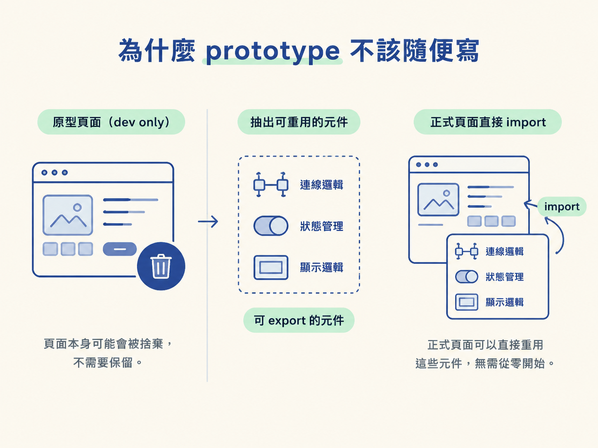
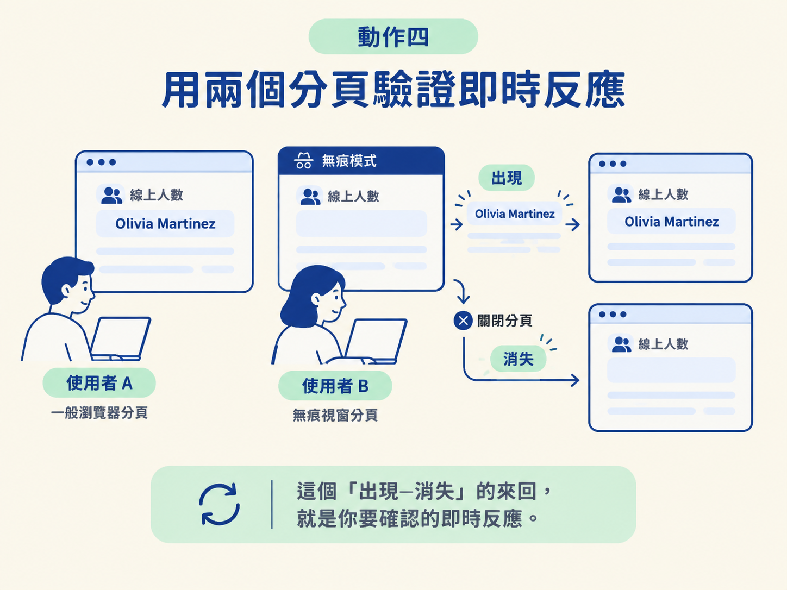

這一節會把上一節做出的 prototype 真正跑起來：維持 TDD 與程式碼標準，把連線和顯示邏輯整理成可重用、可 export 的元件，接上 Ably 服務，再用兩個分頁確認即時反應正常。
做完之後，你會有一個能展示的畫面，也會知道原本「應該可以」的假設是不是真的成立。這些還沒確認的問題就是 unknown unknowns，趁 prototype 還小，把它們一個一個解決掉。
動手前先確認兩件事：
這兩項都準備好，就可以開始把原型從「看起來能用」推進到「真的接得上、跑得動」。
上一節的 prompt 已經送出去了，agent 也做出一個只給開發者看的頁面，並留下可重用的零件。接下來很容易走進一個陷阱：既然原型之後可能會丟掉，是不是裡面的程式碼隨便寫就好，反正正式版本還要重做？
頁面本身也許會被捨棄，但連線、狀態與顯示這些零件沒有理由全部重寫。只要在 prototype 階段維持應有的品質，正式頁面就能直接搬用這些零件，不用從零開始。

do-work skill 內建一個回饋迴圈：先寫出會失敗的測試，再讓程式碼通過測試，最後整理程式碼。即使這只是 prototype，也要照這個順序做，不要因為「之後可能會丟」就跳過測試。
請先確認 agent 在加入連線邏輯之前，已經寫好描述這段邏輯的測試。接著讓它完成實作，並確認型別檢查通過、測試全部變綠。
若型別檢查或測試有任何一項失敗，先修到通過再繼續接服務。不要帶著紅燈往下一步走，否則後面看到的錯誤會混在一起，很難判斷到底是程式問題還是服務設定問題。
接著請 agent 把原型裡的連線與顯示邏輯抽成獨立元件，並明確 export。目標是讓正式頁面之後可以直接 import，而不是只能從目前這個 dev-only 頁面裡挖程式碼。
把原型裡的連線與顯示邏輯抽成獨立、可 export 的元件，
設計成之後正式頁面可以直接 import 使用。
加入 Ably 依賴後，跑一次型別檢查與測試再 commit。執行後，預期會看到幾件事：
pnpm add ably。這一步完成後，原型裡的程式碼已經是可以重複使用的實作資產，不再只是用完就丟的 demo。
現在要讓原型真的連上 Ably。服務後台的設定有時不直覺；如果你不知道該到哪裡取得 key，或不確定要開哪些 capabilities（權限），直接請 agent 提供一步一步的操作指南，包括要去哪裡拿 key，以及這次原型實際需要哪些權限。
拿到 key 後，將它放進 .env，並確認 .env 已經被 gitignore 忽略。權限只開這次原型會用到的部分，不要為了省事全部開啟。
API key 絕對不要寫進程式碼，也不要 commit 到版本控制。只放在 .env，並採用最小權限，這是 prototype 階段就要建立的習慣。
最後進行實測。先啟動開發伺服器，開啟 dev-only 的線上人數頁面；接著再開第二個瀏覽器分頁，或使用無痕視窗，把它當成另一位使用者。
觀察第一個分頁的畫面，預期會看到以下結果：
這個「出現、消失」的來回，就是你要確認的即時反應。

若畫面沒有更新，請依序檢查：
完成這幾個動作後，你會有一個真正連上服務的 prototype。開兩個分頁，就能看到線上人數的即時變化；連線與顯示邏輯也已經整理成可直接重用的元件。
更重要的是，研究階段那些只用「應該可以」帶過的假設，現在都有實際答案：服務接得上、資料顯示得出來，而且即時反應成立。
這就是 prototype 要交付的結果。能展示的畫面只是表面，重點是把 unknown unknowns 清空。剩下的工作不需要你再自己判斷，可以交給後面的 Kanban 與 AFK loop 照著做。接下來把這些結論寫進 PRD，整理成 issue 放進佇列。
原型也要維持 TDD 與程式碼標準，因為連線與顯示零件之後會被正式實作重用。先把它們整理成可 export 的元件，再接上 Ably；API key 放進 .env，只開最小必要權限。最後開兩個分頁實測即時反應。等所有 unknown unknowns 都有答案，剩下的工作就能交給 AFK loop。